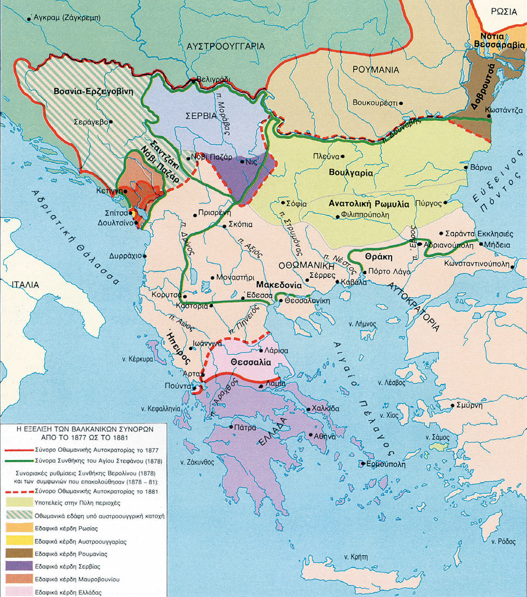

Βήμα 1: Στοιχεία Διεξαγωγής
Καλώς ήρθατε στο Διπλωματικό Συνέδριο. Συμπληρώστε τα στοιχεία της τάξης.
Βήμα 2: Ιστορικό Πλαίσιο

(Κλικ στην εικόνα για μεγέθυνση)
Πηγή: Κωφός Ε., Η Ελλάδα και το ανατολικό ζήτημα 1875 - 1881, Εκδοτική Αθηνών, Αθήνα 2001, σ. 292
Βρισκόμαστε στο τέλος του 19ου αιώνα. Η Οθωμανική Αυτοκρατορία καταρρέει. Οι Μεγάλες Δυνάμεις (Αγγλία, Ρωσία, Αυστρία) και οι Βαλκανικοί λαοί (Έλληνες, Σλάβοι) συγκρούονται για το μέλλον της περιοχής. Ποιος θα επικρατήσει;
Βήμα 3: Πολυμεσικό Υλικό
Μελετήστε το παρακάτω υλικό πριν προχωρήσετε στο Debate.
🎬Πηγή Α: Ιστορικό Βίντεο
Παρακολουθήστε το ιστορικό απόσπασμα:
Πηγή Video: «Η κρίση του Ανατολικού Ζητήματος (1875-1881)» (4.18')
ΝΕΟΤΕΡΗ ΕΛΛΗΝΙΚΗ ΠΟΛΙΤΙΚΗ ΙΣΤΟΡΙΑ 1750-1940 / Κύκλος: Β Επεισόδιο: 003, Η ΒΑΣΙΛΕΥΟΜΕΝΗ ΔΗΜΟΚΡΑΤΙΑ 1863-1923, ΕΡΤ, 1992
https://archive.ert.gr/69161/
📜 Πηγή Β: Γελοιογραφία [Η Ρωσία, η Αγγλία και η Αυστρία ασχολούνται με το «Ανατολικό Ζήτημα» Γελοιογραφία (1878)]
Μελετήστε την ιστορική πηγή: (Κωφός Ε., Η Ελλάδα και το ανατολικό ζήτημα 1875 - 1881, Εκδοτική Αθηνών, Αθήνα 2001, σ. 292)
(Κλικ στην εικόνα για μεγέθυνση)
Βήμα 4: Κειμενικές Πηγές
Διαβάστε προσεκτικά τα παρακάτω αποσπάσματα για να αντλήσετε επιχειρήματα.
Πηγή Γ
«Η αυτοκρατορία απέφυγε τον διαμελισμό -όχι όμως και την σταδιακή συρρίκνωση της-, επειδή ο διαμελισμός της απειλούσε ν' ανατρέψει την ισορροπία ισχύος και επιρροής των μεγάλων δυνάμεων, άλλα και επειδή η προϊούσα παρακμή και η αδυναμία της επρόσφεραν πλήθος ευκαιριών στους μνηστήρες των εδαφών της ν' αποκομίζουν όλο και περισσότερα κέρδη. Η γειτνίαση με δύο από τις μεγάλες ευρωπαϊκές δυνάμεις, την Αυστρία και την Ρωσία, επέβαλαν στις άλλες δυνάμεις, μάλιστα δε στην Βρετανία και την Γαλλία, να αναλάβουν τον ρόλο των προστάτιδων δυνάμεων της εδαφικής ακεραιότητας της αυτοκρατορίας. Το ενδεχόμενο να περιέλθουν οι κτήσεις του Οθωμανού Σουλτάνου στην κυριότητα των Αψβούργων και των Ρωμανώφ, οι προσπάθειες της Βρετανίας και της Γαλλίας ν' αποστρέψουν αυτό το ενδεχόμενο και οι αγώνες των υποτελών λαών της αυτοκρατορίας ν' αποκτήσουν εθνικά κράτη στην επικράτεια της συνιστούσαν το διεθνές ζήτημα που έμεινε γνωστό ως "Ανατολικό Ζήτημα".»
Κολλιόπουλος Ι., Ιστορία της Ελλάδος από το 1800. Η διαμόρφωση και η άσκηση της εθνικής πολιτικής, Βάνιας, Θεσσαλονίκη 2002, τ. Β ́, σ. 20
Πηγή Δ
«Η συνθήκη του Αγίου Στεφάνου και το συνέδριο του Βερολίνου εγκαινίασαν μια νέα φάση, όχι τόσο λόγω του γεγονότος και όχι μόνο λόγω των διαδοχικών εδαφικών ανακατατάξεων, αυτών καθαυτών, όσο λόγω του ότι οι ανακατατάξεις αυτές οδήγησαν άμεσα σε μια διαδικασία μόνιμης αντιπαραθέσεως των βαλκανικών εθνικισμών. Στο έξης, τα εθνικά αλυτρωτικά οράματα έγιναν εγχειρηματικά και άμεσης εφαρμογής, και όχι πια "ακαδημαϊκές" επιθυμίες εθνικής ολοκληρώσεως που προσέκρουαν διαρκώς στην απαγορευτική άρνηση των Δυνάμεων να δεχθούν οποιαδήποτε τροποποίηση του εδαφικού καθεστώτος. Από το 1875 και πέρα οι Μεγάλες Δυνάμεις δεν ήταν πια σε θέση να επιβάλλουν την αποκλειστική τους θέληση στο χώρο της Βαλκανικής. Κατά τα πρώτα 50 χρόνια μετά την απελευθέρωση, η ελληνική "Μεγάλη Ιδέα" - όπως και αντίστοιχες των βαλκανικών γειτόνων προσέκρουε σε μια οθωμανική αυτοκρατορία "εγγυημένη" από τα κοινά συμφέροντα της ευρωπαϊκής συγχορδίας, με αποτέλεσμα την αποτελμάτωση των εθνικών ονείρων, που μεταθέτονταν στις ελληνικές καλένδες. Στο έξης οι ενδιαφερόμενοι που προσβλέπουν στην ίδια κληρονομιά υψώνουν όλοι μαζί το ανάστημα τους και οι εθνικές βλέψεις δεν προσκρούουν πια σε μια ατελεύτητη αναμονή, αλλά αντίθετα κινδυνεύουν να καταβαραθρωθούν από τη μια μέρα στην άλλη. Από την περίοδο των άγονων διεκδικήσεων περνάμε απότομα στην περίοδο της άμεσης αναμετρήσεως.»
Τσουκαλάς Κ., «Η ανορθωτική προσπάθεια του Χαρίλαου Τρικούπη», Ιστορία του Ελληνικού Έθνους, Εκδοτική Αθηνών, Αθήνα 1977, τ. ΙΔ ́, σ. 9
Βήμα 5: Οι 5 Αντιμαχόμενες Πλευρές
1. Αγγλία / Δύση
«Ισορροπία & Realpolitik. Όχι στη Ρωσική κάθοδο.»
2. Ρωσία
«Πανσλαβισμός. Έξοδος στο Αιγαίο.»
3. Ελλάδα
«Μεγάλη Ιδέα & Ιστορικά Δίκαια.»
4. Οθωμανική Αυτ.
«Εδαφική Ακεραιότητα & Επιβίωση.»
5. Βουλγαρία/Σλάβοι
«Εθνική Αφύπνιση & Μεγάλη Βουλγαρία.»
6. Ιστορικοί Κριτές
Παρατηρητές του Συνεδρίου.
Βήμα 6: Πρώτη Εκτίμηση (Δημοσκόπηση)
Ποια πλευρά πιστεύετε ότι έχει τα πιο δίκαια/ισχυρά επιχειρήματα μέχρι τώρα;
Βήμα 7: Καταγραφή Επιχειρημάτων
Σημειώστε τα βασικά επιχειρήματα κάθε διπλωματικής αποστολής.
🇬🇧 Αγγλία/Γερμανία
🇷🇺 Ρωσία
🇬🇷 Ελλάδα
🇹🇷 Οθωμανική Αυτ.
🇧🇬 Βουλγαρία/Σλάβοι
Βήμα 8: Η Ώρα της Κρίσης (Συνέδριο Βερολίνου)
⏱️ Χρονόμετρο Αγόρευσης
Φύλλο Αξιολόγησης (Για τους Κριτές)
| Κριτήριο | Αγγλία | Ρωσία | Ελλάδα | Οθωμανοί | Σλάβοι |
|---|---|---|---|---|---|
| Ιστορική Ακρίβεια | |||||
| Πειστικότητα | |||||
| Αντίλογος |
Βήμα 9: Τελική Ετυμηγορία
Μετά την ακρόαση των επιχειρημάτων, ποια λύση προκρίνει το Συνέδριο;
Συλλογικό Συμπέρασμα Τάξης
📸 Ανακεφαλαίωση Χάρτη
(Κλικ στην εικόνα για μεγέθυνση)
Βήμα 10: Κάρτες Εμπέδωσης (Flashcards)
Ελέγξτε τις γνώσεις σας για το Ανατολικό Ζήτημα! Κάντε κλικ για απάντηση.